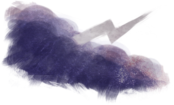
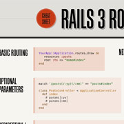
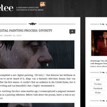
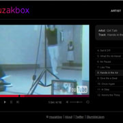

After eight years of design and strategic consulting for the online medium, there's still little (Star Wars, you understand) about which I'm more enthusiastic. I love planning and producing intuitive, top-quality websites that help users and clients achieve their goals.

My background in user interface design is accented by a multi-disciplinary skillset that includes visual design, content strategy and project management. The result is beautiful, well-planned websites that are highly usable, engaging, and persuasive.
I've spent the last six months working with [former place of employment], one of the leading Ruby on Rails development firms in the United States. I've designed compelling interfaces for social networks, job-hunting services, and other large-scale Rails applications.

Rails 3 cheat sheets (unofficial version)
Weekday Type Experiments, series of Dribbble shots

Custom Wordpress theme for my tutorial blog, Keetee

Co-creation, design of Rails-driven Muzakbox
I'm a sharp, lively, hardworking gal with a genuine zeal for web design and helping others learn about it.
I believe in generating smart, quality-driven communication solutions, executing them with efficiency and dedication, and using testing and measurement to continually improve.
Hire me and you won't regret it!